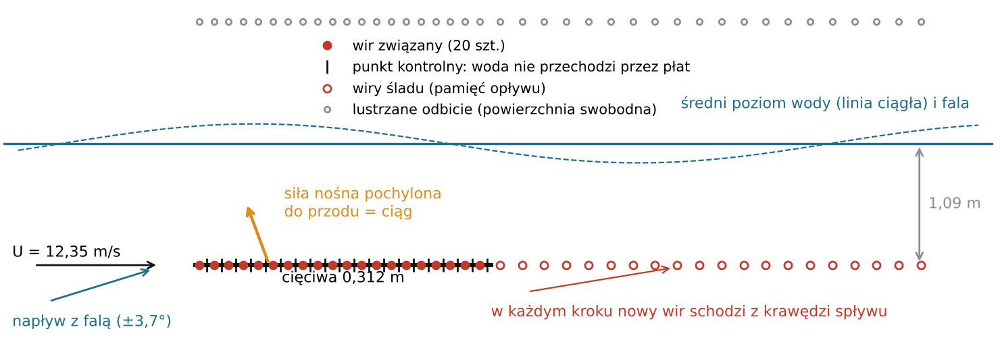
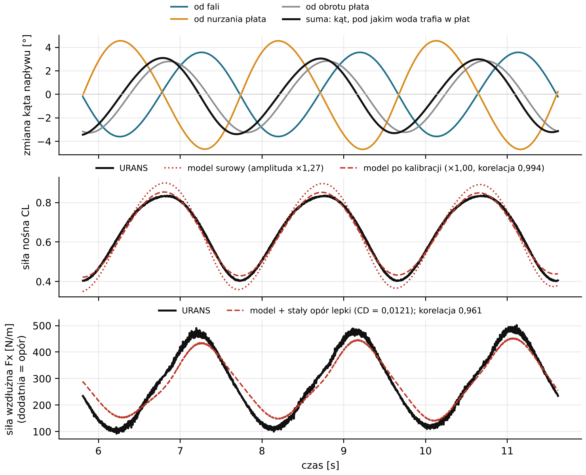
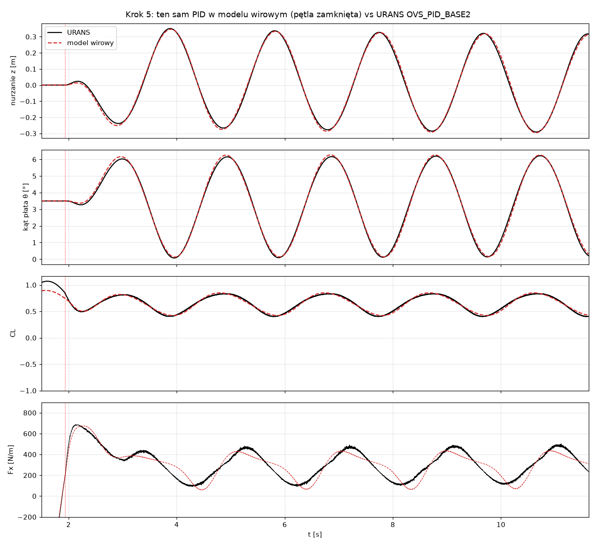

Julian Serkieza • 11 listopada 2026 • przypadek Godø: cięciwa 0,312 m, 12,35 m/s (24 w), zanurzenie 1,09 m, fala z dziobu H = 1,5 m, T = 5 s
Płat jest zastąpiony rzędem 20 małych wirów ułożonych wzdłuż cięciwy. Każdy wir to kawałek siły nośnej. Ich siłę dobieram w każdym kroku tak, żeby w 20 punktach kontrolnych woda nie przechodziła przez płat. Gdy siła nośna się zmienia, z krawędzi spływu schodzi nowy wir i płynie z wodą do tyłu. Te wiry w śladzie są pamięcią opływu: przez nie siła nośna reaguje na zmianę z opóźnieniem. Powierzchnię wody udaje lustrzane odbicie wszystkich wirów nad nią. Fala wchodzi jako prędkość wody w górę i w dół w miejscu płata.
Ciąg z fali bierze się stąd, że siła nośna jest prostopadła do kierunku, z którego woda trafia w płat. Kiedy woda idzie do góry, siła nośna pochyla się do przodu.

| Test | Co sprawdza | Różnica względem teorii |
|---|---|---|
| Theodorsen, obrót i ruch pionowy | wielkość i opóźnienie siły nośnej przy drganiach płata | siła do 1%, faza do 0,6°, moment do 2% |
| Sears | siła nośna od podmuchu pionowego | do 2% |
| Garrick | średni ciąg drgającego płata | do 1% |
Pierwsza wersja liczyła ciąg błędnie (brakowało prędkości własnej płata). Wyłapał to test Garricka.
Z przebiegu URANS biorę zapisany kąt płata, prędkość nurzania i falę. Wkładam je do modelu wirowego i porównuję siły. Model nie steruje tu niczym, tylko odtwarza.
| Przebieg URANS | Siła nośna CL: zgodność kształtu / amplituda | Siła wzdłużna Fx: zgodność kształtu / amplituda | Opór lepki z różnicy średnich (CD) |
|---|---|---|---|
| Płat nieruchomy (studium siatki, 4 okresy) | faza 6° / 0,97 | faza 3° / 1,12 | – |
| PID, swobodne nurzanie (BASE2, 5 okresów) | 0,993 / 1,27 | 0,961 / 0,88 | 0,0121 |
| PID + losowe ruchy ±2° (PRBS1, 5 okresów) | 0,990 / 1,23 | 0,979 / 0,94 | 0,0124 |
| PID + sinus ±2° (SINE_A2, 2,5 okresu) | 0,964 / 1,57 | 0,996 / 1,06 | 0,0118 |
Zgodność kształtu to współczynnik korelacji (1 = idealnie). Amplituda to stosunek model/URANS. Opór lepki w wodzie spokojnej z osobnego URANS: CD = 0,0134. Dla płata nieruchomego średni ciąg z fali w modelu to 248 N/m wobec ok. 300–310 N/m w URANS.
Co widać: siła wzdłużna zgadza się w kształcie i w amplitudzie do ok. 12%. Siła nośna ma dobry kształt, ale przy swobodnym nurzaniu model daje za dużą amplitudę (o 23–57%). Przy płacie nieruchomym tego błędu nie ma (−3%).
Kalibracja siły nośnej. Siłę nośną rozkładam na trzy części: od fali, od obrotu i od nurzania. Każdą mnożę przez stały współczynnik (0,66 / 0,63 / 0,66), a części od fali i od nurzania opóźniam o 0,08 s. Współczynniki dopasowałem na dwóch przebiegach (BASE2 i PRBS1), a sprawdziłem na trzecim, którego nie użyłem do dopasowania (SINE_A2):
| Po kalibracji | BASE2 (dopasowanie) | PRBS1 (dopasowanie) | SINE_A2 (sprawdzenie) |
|---|---|---|---|
| CL: zgodność kształtu / amplituda | 0,994 / 1,00 | 0,992 / 0,99 | 0,984 / 1,04 |
W modelu wirowym uruchamiam ten sam regulator PID co w URANS, z tym samym serwem i swobodnym nurzaniem. Teraz model sam wyznacza ruch płata. Jeśli jest dobry, płat ma się poruszać tak samo jak w URANS.
| Wielkość (ostatnie okresy) | BASE2: URANS / model | PRBS1: URANS / model | SINE_A2: URANS / model |
|---|---|---|---|
| Amplituda nurzania [m] | 0,305 / 0,307 (+0,7%) | 0,315 / 0,314 (−0,5%) | 0,146 / 0,143 (−1,8%) |
| Zakres kąta płata [°] | 0,07…6,22 / 0,13…6,27 | −1,95…7,49 / −2,04…7,49 | 0,94…5,38 / 1,00…5,60 |
| Średnia moc oporu [W na pasek 0,02 m] | 69,5 / 69,4 (−0,1%) | 67,2 / 65,1 (−3,0%) | 63,3 / 67,5 (+6,6%) |
| Zakres siła nośna / ciężar | 0,63…1,30 / 0,66…1,32 | 0,41…1,54 / 0,48…1,52 | 0,82…1,17 / 0,83…1,16 |
Próg, który przyjąłem przed testem: różnica nurzania i mocy oporu poniżej 15%. Wszystkie trzy przebiegi go spełniają. SINE_A2 nie był użyty do kalibracji.


| Czego model nie ma | Co jest wpisane ręcznie zamiast tego | Na ile to sprawdzone |
|---|---|---|
| Oderwanie (model jest liniowy, siła nośna rośnie bez końca) | Blokada siły nośnej: do CL = 0,9 bez zmian, potem krzywa łagodnie dochodzi do 1,0 i dalej nie rośnie. Za nadwyżkę ponad blokadę dopisany jest opór karny: ΔCD = 0,5 · (nadwyżka CL)². Blokada działa tylko od góry; dla małych i ujemnych CL żadnej nie ma. | Założenie. W URANS CL doszło do 1,07 bez załamania, więc 1,0 jest ostrożne, ale prawdziwej granicy oderwania nie znam. Liczba 0,5 w oporze karnym nie pochodzi z danych. |
| Lepkość | Stały opór lepki CD = 0,0121 dodany do siły wzdłużnej. | Z trzech przebiegów wychodzi 0,0118–0,0124. W wodzie spokojnej jest 0,0134, czyli stała „z fali" jest o ok. 10% mniejsza. Zależności od kąta nie ma. |
| Poprawna amplituda siły nośnej przy nurzaniu | Trzy współczynniki (0,63–0,66) i opóźnienie 0,08 s, opisane w punkcie 2. | Dopasowanie, nie fizyka. Wszystkie trzy części drgają z tą samą częstością, więc pojedynczych współczynników nie da się wyznaczyć pewnie, pewna jest tylko ich suma. Sprawdzone dla jednej fali (T = 5 s). Przyczyny zawyżenia nie ustaliłem. |
| Moment względem osi obrotu | Nic. Model go liczy, ale wynik nie zgadza się z URANS (zgodność kształtu 0,1–0,3, amplituda ok. 10%). | Niezwalidowany. Mocy siłownika nie biorę z modelu; w nagrodzie jest kara za prędkość kąta. |
| Prawdziwa powierzchnia swobodna | Lustrzane odbicie wirów (dobre przy dużej prędkości; tu liczba Froude'a od zanurzenia 3,8) i poprawka na chwilowe zanurzenie płata pod falą. | Fal wytwarzanych przez płat i zasysania powietrza nie ma. Amplituda fali (0,73 m) to 67% zanurzenia, więc model liniowy jest tu naciągnięty. Poprawka na chwilowe zanurzenie to założenie. |
| Grubość, wysklepienie, trzeci wymiar | Płaska płytka 2D; wysklepienie wchodzi tylko przez średnie CL wzięte z URANS (0,642 przy 3,22°). | Brak rozkładu ciśnień, więc brak oceny kawitacji. Efekty końców płata pominięte, tak jak w pasku quasi-2D w URANS. |
| Fala nieliniowa | Fala liniowa (Airy'ego) o amplitudzie dopasowanej do tej zmierzonej w URANS. | Przy H/λ = 0,038 różnica jest mała. Fala nieregularna jest w modelu, ale bez porównania z URANS. |
Słowa kluczowe po angielsku: model wirowy = unsteady lumped-vortex (discrete vortex) model with shed wake; warunek nieprzenikania = flow-tangency condition; ślad = wake; lustrzane odbicie = free-surface image (high-Froude limit); odtworzenie ruchu = prescribed-motion replay; pętla zamknięta = closed-loop test; oderwanie = flow separation / stall; blokada CL = lift saturation (clamp). Dane: przebiegi overset OVS_PID_BASE2, OVS_PID_PRBS1, OVS_PID_SINE_A2 (STAR-CCM+ 2606, dt = 1 ms, 16 rdzeni); skrypty w 70_godo_case\vortex_validation i 50_learning\vortex_env.